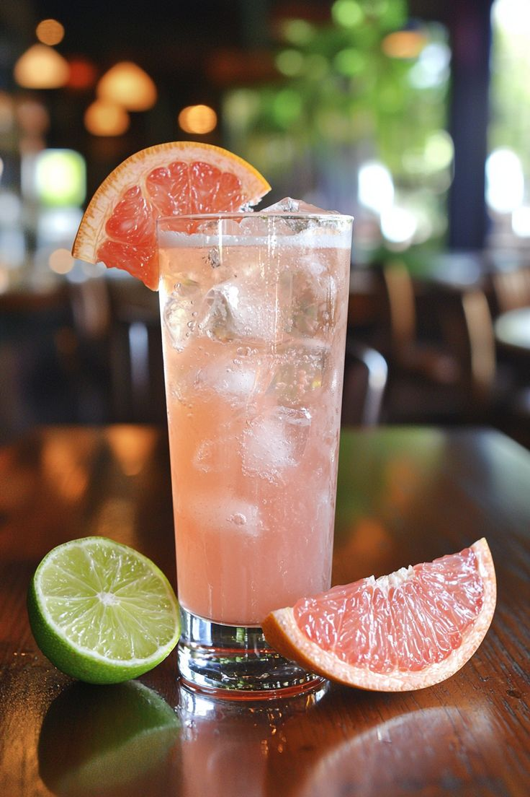
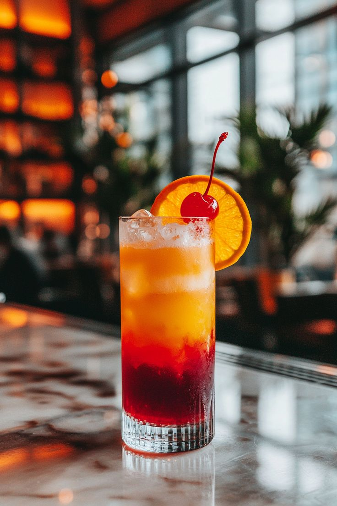
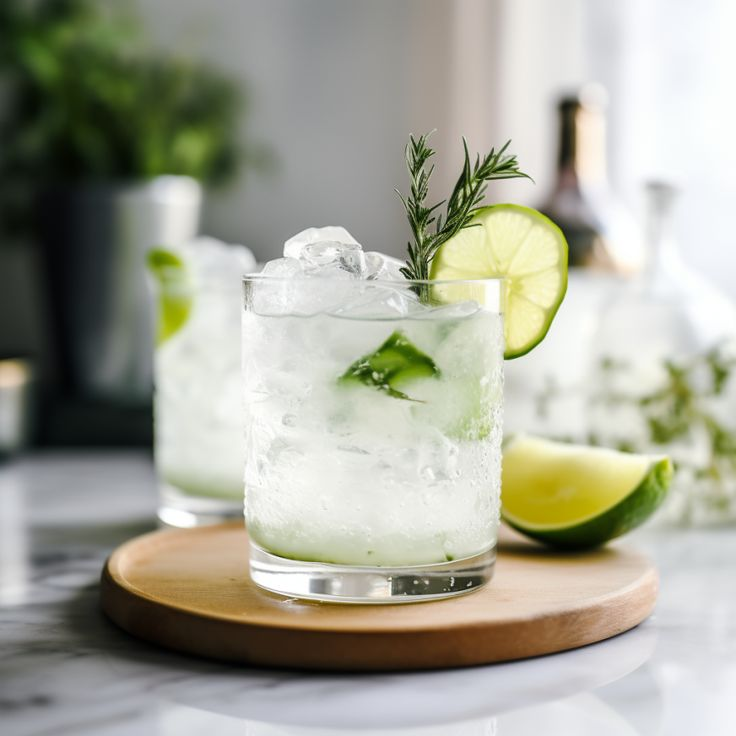
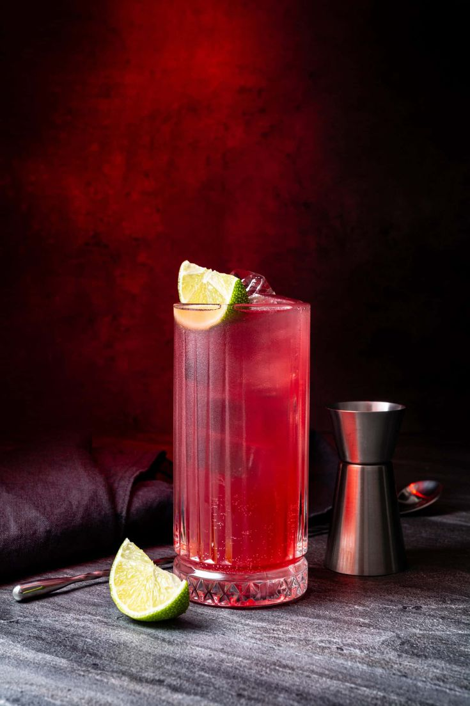
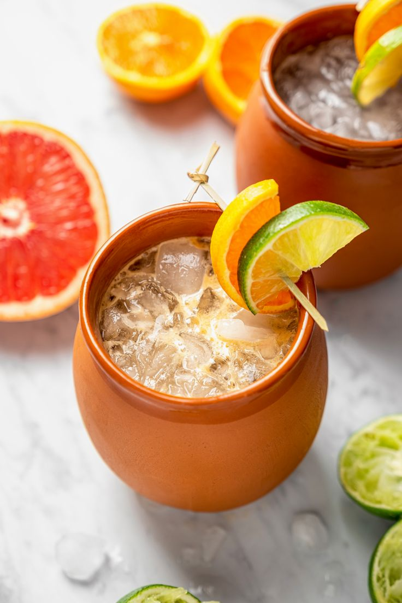
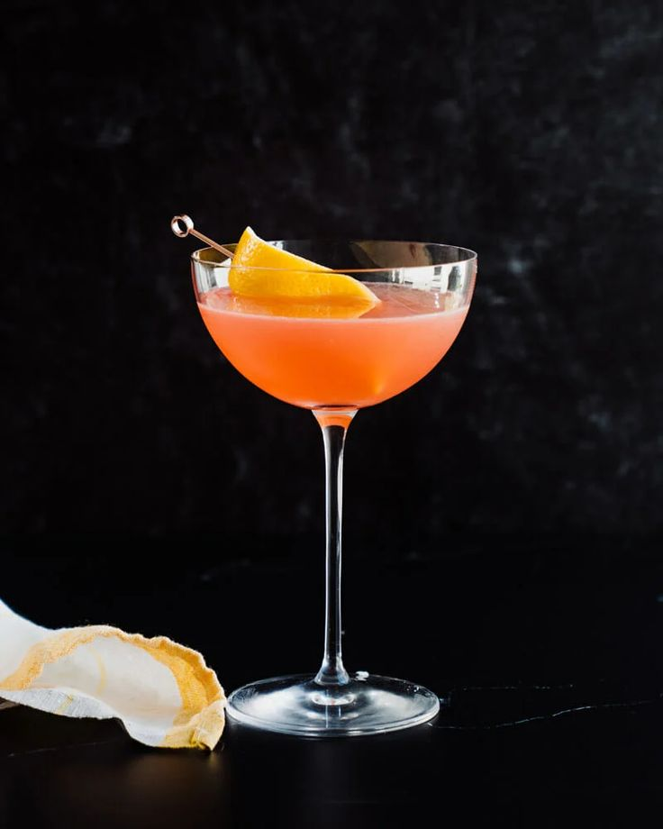
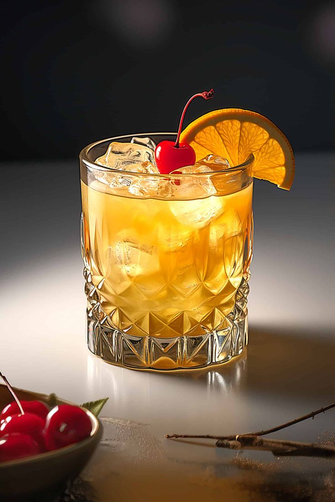
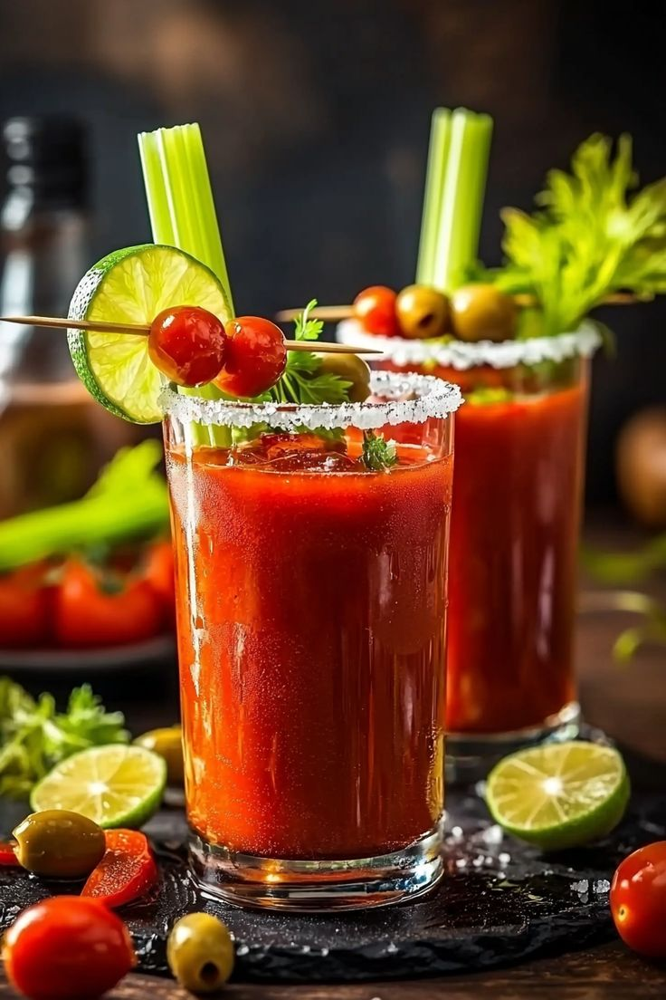

A combinação do sabor terroso da tequila com o amargor intenso da toranja cria um highball refrescante, perfeito para o clima quente.
Tempo de preparo: 4 minutos

A combinação de suco de laranja e grenadine cria um efeito de nascer do sol tão bonito quanto delicioso.
Tempo de preparo: 3 minutos

Este refrescante coquetel texano se tornou meu favorito nos dias quentes de verão!
Tempo de preparo: 3 minutos

O toque picante da cerveja de gengibre complementa o apimentado natural da tequila de uma forma que a vodca simplesmente não consegue igualar.
Tempo de preparo: 5 minutos

O licor de groselha preta adiciona notas ricas de frutas vermelhas que complementam perfeitamente a tequila envelhecida,.
Tempo de preparo: 3 minutos

Esta especialidade regional demonstra a versatilidade da tequila com cítricos.
Tempo de preparo: 4 minutos

Este clássico moderno criado pela bartender Katie Stipe rapidamente se tornou um item essencial na minha rotina de coquetéis caseiros.
Tempo de preparo: 3 minutos

Depois de dominar o whiskey sour, apliquei essas técnicas à tequila com resultados espetaculares!
Tempo de preparo: 4 minutos

As notas terrosas e levemente apimentadas da tequila complementam o tomate e as especiarias de uma forma que a vodca simplesmente não consegue igualar.
Tempo de preparo: 3 minutos

O sabor terroso da tequila complementa as notas torradas do café, criando um coquetel com mais nuances do que a vodca original.
Tempo de preparo: 4 minutos
A combinação de tequila e mezcal cria uma base complexa que rivaliza com qualquer uísque old fashioned, com notas defumadas e doçura de agave.
Tempo de preparo: 5 minutos